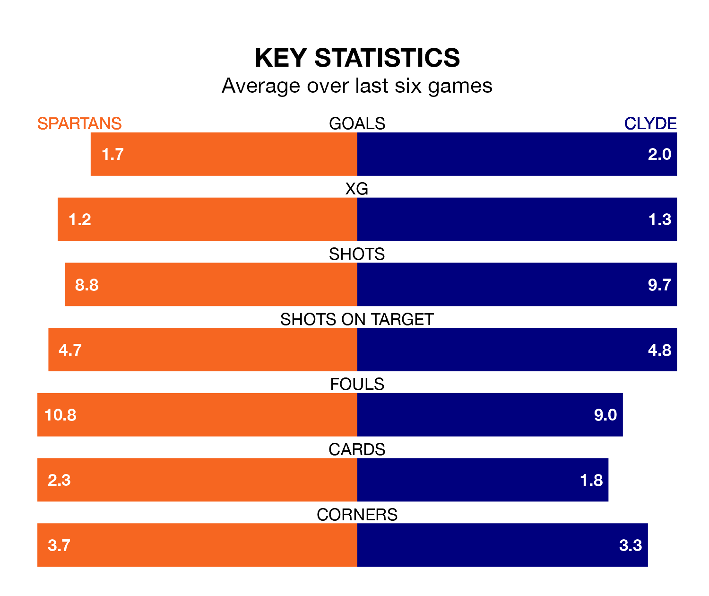

Struggling Spartans face Clyde at the Ainslie Park Stadium on Saturday looking to build on a win in their last league outing.
After securing all three points with a 0-2 victory over Stenhousemuir on January 13, the Spartans sit third in League Two.
They travel to play a Clyde side 10th in the standings, who were held in their last match, 1-1 against East Fife.
In Blair Henderson, Spartans have one of the league's most on-form strikers so far this season. He has notched nine goals in 18 appearances, to sit second in the scoring charts.
His goal rate of one every 175 minutes is slightly quicker than that of Martin Rennie, Clyde's top scorer with a goal every 162 minutes, and a total of six goals in 13 games.
With 31 goals in 18 games so far this season, the Spartans are scoring more than average in the league with 1.7 goals per game. And they are conceding fewer than average, letting in 21 goals at a rate of 1.2 per game.
The Bully Wee, meanwhile, are below average scorers, with 1.2 goals per game, compared to a league average of 1.4. They have conceded 2.0 goals per game.
The hosts are in reasonable form in League Two, with four wins and two losses from their last six games.
With a win and three draws over that period, the away side's form is much worse – they have taken six points from 18, compared to Spartans's 12.
Over the last two years, Spartans and Clyde have played each other twice. Spartans won one of them and they drew the other.
Their last meeting was on November 4, when Spartans won 2-1 away.
Updated: 09:18 (UTC), 23/01/24